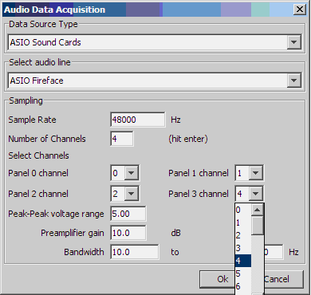

This figure shows to create 4 panels for these selected 4 channels.

These instructions guide a user on how to configure the Asio Sound Card module in PAMGUARD.
In PAMGUARD users can tell the program to read a certain number of channels e.g 1, 3, 6, 7 ...
|  |
|
|

|

|